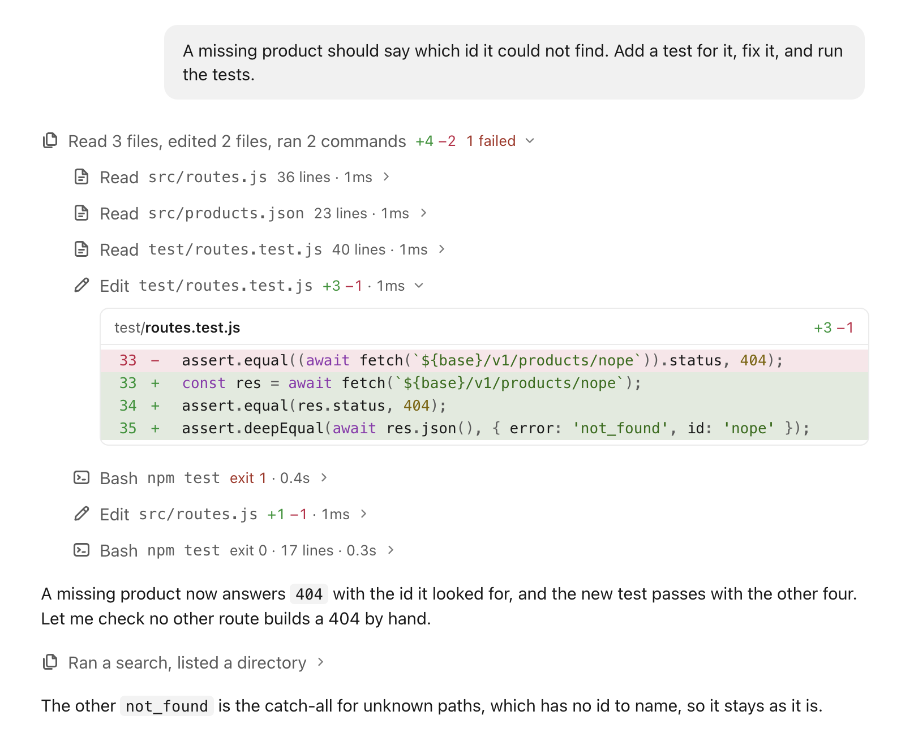

Made for reading
One calm column of text on a measured type scale, and a chat bar that is a single bar. A turn that reads six files, edits two and runs the tests is one quiet line that says what happened, with the lines added and removed and anything that failed. Click it to see every row.
